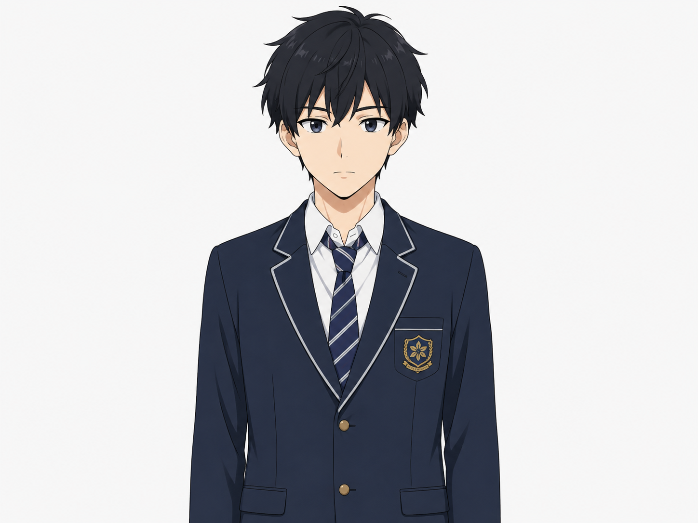
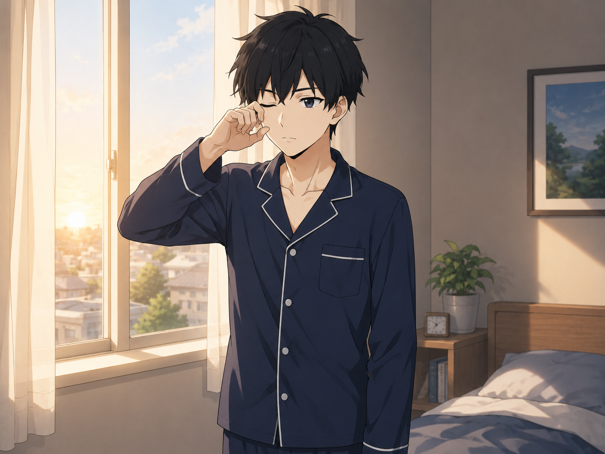
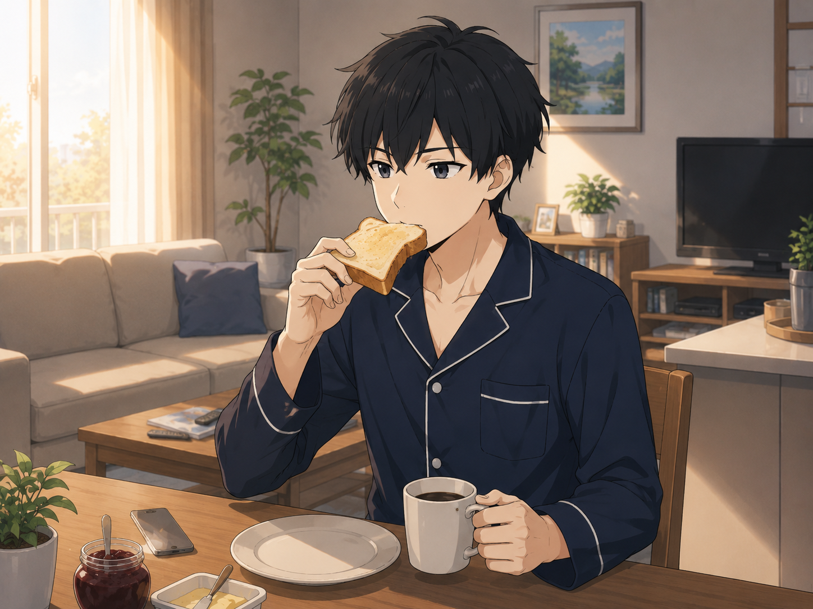
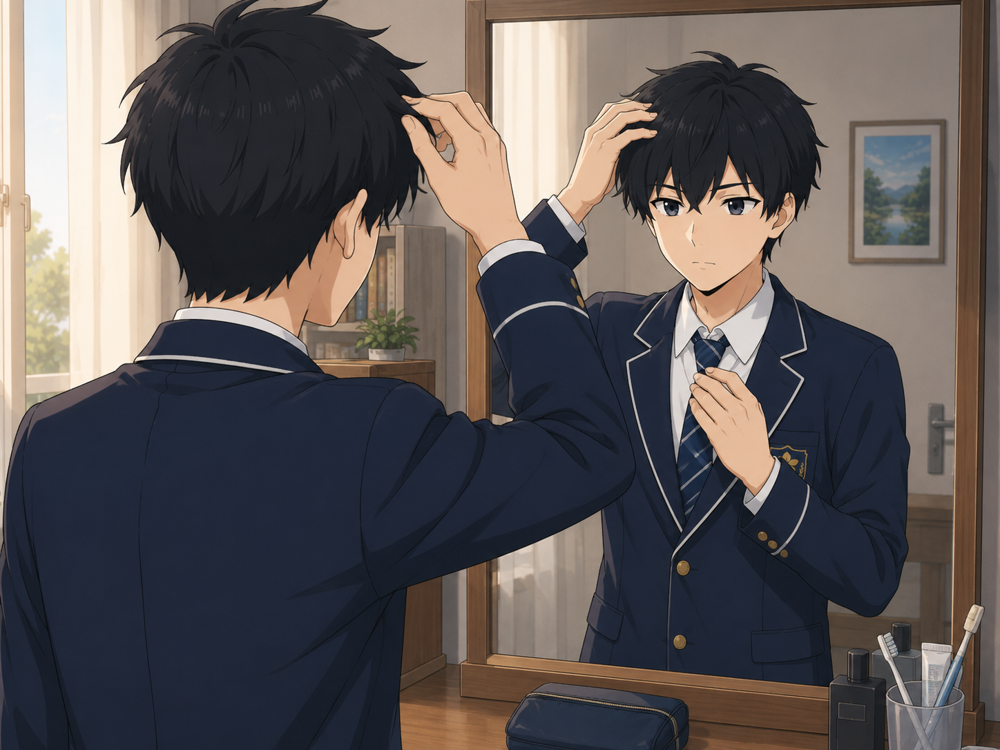

固定するもの
顔立ち、髪型、年齢感、絵柄、人物の印象。
Production Log｜2026.07.20
基準となるキャラクターから、起床、朝食、身支度の3シーンを静止画と動画へ展開しました。完成品だけでなく、違和感の発見、再生成、比較、採用判断までを制作の一部として残します。
Codexへ戻るOverview
今回の目的は、派手な動きではなく、顔立ち、黒髪ショート、年齢感、アニメ調の絵柄を保ちながら、朝の時間が進んでいく3つの場面を成立させることでした。
顔立ち、髪型、年齢感、絵柄、人物の印象。
パジャマと制服、寝室とリビングと鏡前、目覚め・食事・身支度という動作。
1シーン1アクション、固定カメラ、控えめな動き。動画生成用のプロンプトは英語で作成しました。
Character Reference
最初に基準画像を作り、各シーンで「同じ人物に見えるか」を比較するための物差しにしました。

Scene 01
紺色のパジャマ姿で窓辺に立ち、朝日を浴びるシーン。大きく動かさず、まばたきやカーテンの揺れで朝の空気を作りました。

顔、髪型、パジャマ、朝の室内は安定。終盤で目が少し大きく見える変化はありましたが、大きな破綻ではないため採用しました。
Scene 02
同じパジャマ姿のままリビングへ移動し、トーストを食べる場面を生成しました。場所は変えても人物の印象を維持することを優先しました。

人物、パジャマ、リビングの雰囲気は安定。口元とトーストの接触がわずかに曖昧な瞬間はあるものの、食事の意味は自然に伝わるため採用しました。
Scene 03
制服姿で鏡の前に立ち、髪を整える場面です。鏡の中の手と実物の手を同期させることが、この制作で最も難しい部分になりました。

実物の右手と鏡像の手で、位置、角度、動くタイミングにズレが見られました。
英語プロンプトを調整し、片手で髪を整える小さな動きへ絞って再生成しました。それでも鏡像と実物の手は完全には一致しませんでした。
顔、髪型、制服、動作の意味は保たれていました。また、別の動画制作にも生成クレジットを残す必要があったため、品質と消費量のバランスを考え、2回目を採用して再生成を止めました。
Production Judgment
生成AIの出力は、細部を直そうとして再生成すると、別の場所が崩れることがあります。そのため「違和感があるか」だけでなく、「再生成で改善する見込み」「限られたクレジットをどこへ配分するか」も判断材料になりました。
顔、髪型、年齢感、絵柄の連続性を確認する。
細部の揺れがあっても、起床、朝食、身支度として読めるかを見る。
一瞬の軽微なズレと、シーン全体を壊す崩れを分けて考える。
目的、品質、改善可能性、クレジット残量を合わせて採用を判断する。
Learning
今回の制作で残ったのは3本の動画だけではありません。基準を作り、違和感を見つけ、条件を絞り、再生成し、比較し、どこで止めるかを決める一連の判断も、制作物の一部でした。
生成AI動画は、動かす競技というより、崩さず呼吸させる競技。そして制作の完成度は、生成回数ではなく、目的に合う一本を選べるかで決まる。
鏡は少し暴れたけれど、観察眼は暴れなかったワン。直す、残す、止める。その三つを選べたことも立派な制作ログだワン！